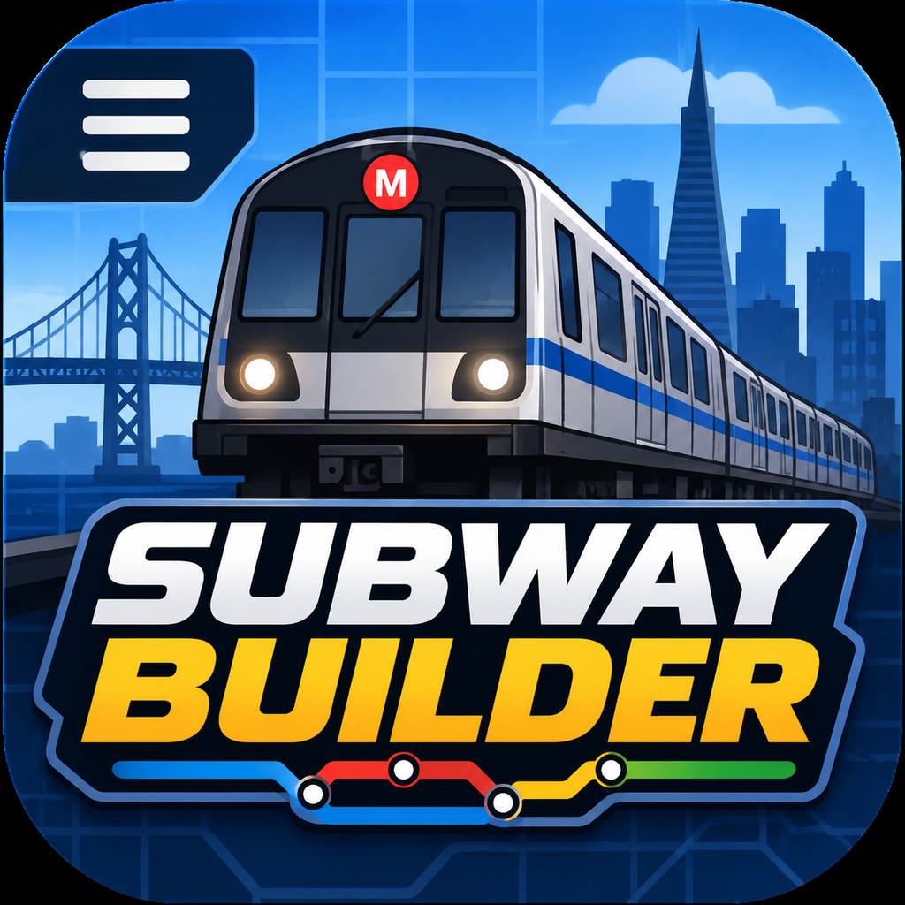

DESIGN • BUILD • CONNECT
SUBWAY BUILDER
DESIGN • BUILD • CONNECT
🚇 Start Building
▶ Continue
⚙ Settings
ⓘ About
STATION OPTIONS
Rename Station
ELEVATION
Above Grade
At Grade
Below Grade
Close
🚇 SUBWAY BUILDER
CITY
San Francisco
MONEY
$25,000
PASSENGERS
0
×
CONSTRUCTION
＋ Station
〰 Build Track
📍 Add Waypoints
🗑 Delete
ADVANCED CONSTRUCTION
Single Track
Parallel Tracks
PLATFORM WIDTH
Narrow
Default
Wide
TRACK SHAPE
〰 Curve Tool: Off
ⓘ Inspect
EDIT
↶ Undo
↷ Redo
MAP APPEARANCE
🌙 Map Theme
☀️ Light Map
🌙 Dark Map
NETWORK
Stations: 0
Track: 0 sections
☰
Tap the map to build your first station.
▶ Run Trains
Cancel